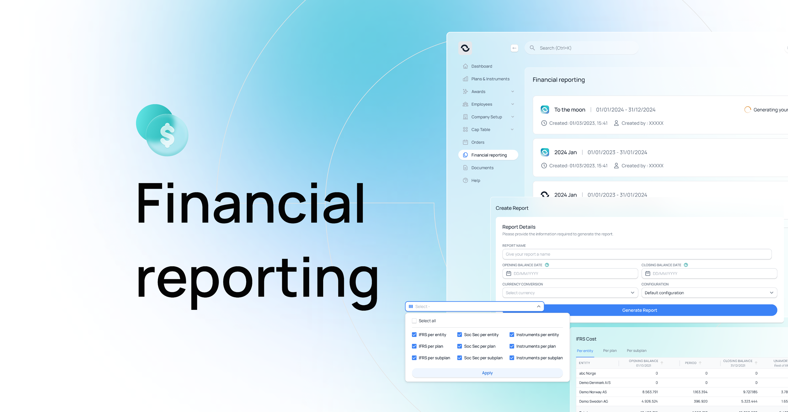

Self-serve financial reporting for compliance-heavy teams
Customer Success used to hand-build the monthly Excel exports for every client. I led the redesign that replaces those with guided self-serve flows — across IFRS, audit, period-close and ad hoc report types — and shaped the rules engine that scales them across jurisdictions without engineering tickets.
~1 000 h / yr
Manual Customer Success work eliminated by self-serve reporting.
days → hours
Reporting prep time end-to-end, across multiple report types.
